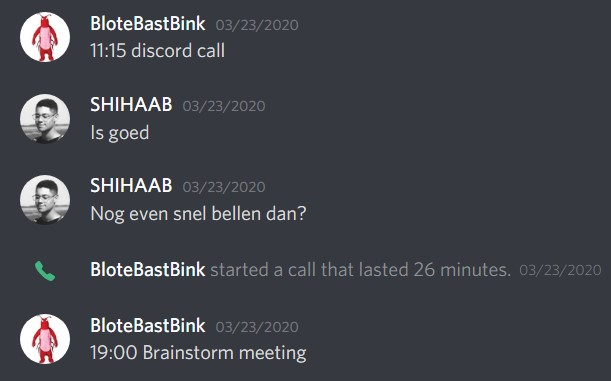

Toen ik nog op mijn MBO opleiding zat had ik een al een beetje geleerd om te communiceren
voordat ik iets ging realiseren zodat ik het product zo veel mogelijk aan de wensen kan laten voldoen.
Vragen stellen is mijn grootste probleem, want ik probeer zo veel mogelijk zelf op te lossen
waardoor ik soms dingen mis of beter om hulp kan vragen.
De communicatie met docenten had ik op school meer dan nu in verband met Corona.
Ik vind het namelijk gemakkelijker om in persoon met docenten te praten dan via een online meeting.
Dit geeft mij een beter gevoel.
Gelukkig vraag ik wel feedback of hulp aan mensen om mij heen zoals groepsgenoten en vrienden,
als ik daar behoefte aan heb.
De personen die invloed hebben gehad op de projecten.

Onze IKAI projectgroep bestaat uit: Ananda(IKAI), Sander, Shihaab, Rafaël, Luca en ik.
Voor de Corona crisis hebben we op school veel contact gehad,
maar toen we thuis moesten werken is dat bijna 100% online geworden.
We hebben veel contact gehad via Discord, zoals je hierboven ziet, en via Whatsapp.
Er waren chat-groepen zonder IKAI en met IKAI zodat het niet te chaotisch wordt voor IKAI
als we bijvoorbeeld over een andere opdracht aan het praten zijn.
Whatsapp gebruikten we vooral voor kleinere vragen of als we iets snel kwijt moesten.
Discord gebruikten we voor overleg wat handig is omdat je een scherm kunt laten zien aan andere mensen
zodat ze mee kunnen kijken als je iets wilt laten zien.
Communicatie tussen onze groep en Bernd-Jan (onze semester coach) gebeurde in het begin nog op school,
maar door Corona is dit online via Microsoft Teams geworden.
We hebben in het begin van het IKAI project elke week een groep update gehad die we wel fijn vonden.
We hebben ook induviduele gesprekken gehad met Bernd-Jan zodat hij wat beter gefocust kan zijn per persoon.
Ondertussen hadden we reviews gekregen over onze Portfolio's.
Het bleek dat we te veel naar elkaars Portfolio keken waardoor we dachten dat we op een goed pad zaten
dat uiteindelijk niet zo bleek te zijn.
Zelf denk ik dat ik beter wat meer communicatie kon aanvragen met docenten
zodat ik eerder wist of ik op het goede pad zat of niet.
Wat ik geleerd heb en de volgende keer anders zou doen
Ik heb geleerd om te proberen zo veel mogelijk contact te houden met mensen.
Dit heb ik vooral met mijn projectgroepje gedaan via Discord en Whatsapp
omdat we door Corona thuis moeten blijven.
De volgende keer ga ik eerder beginnen aan mijn opdrachten
en zal ik proberen zelf de communicatie wat meer aan te sporen zodat de leraar dat niet alleen maar doet.